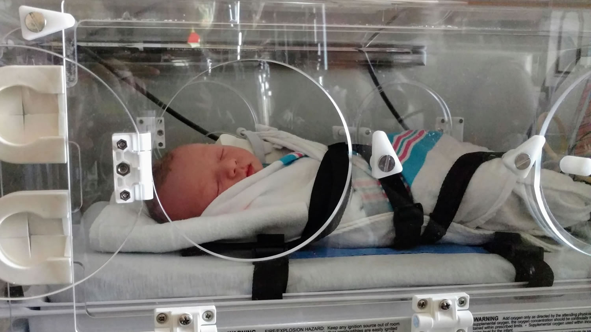

Meet Matthew
- born
- June 25, 2017
- kid #
- 5
- sibling rating
- 10/10
Matthew was transferred to a children's hospital with health problems, and spent three weeks in the NICU undergoing treatment.

Three weeks later he met the rest of the family
While working through the adoption process, Matthew settled in, and even traveled Europe with us.
Matthew was officially adopted and declared a Szobody on October 30. He is ours.